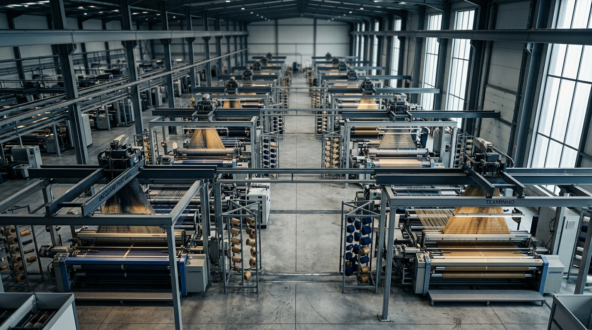
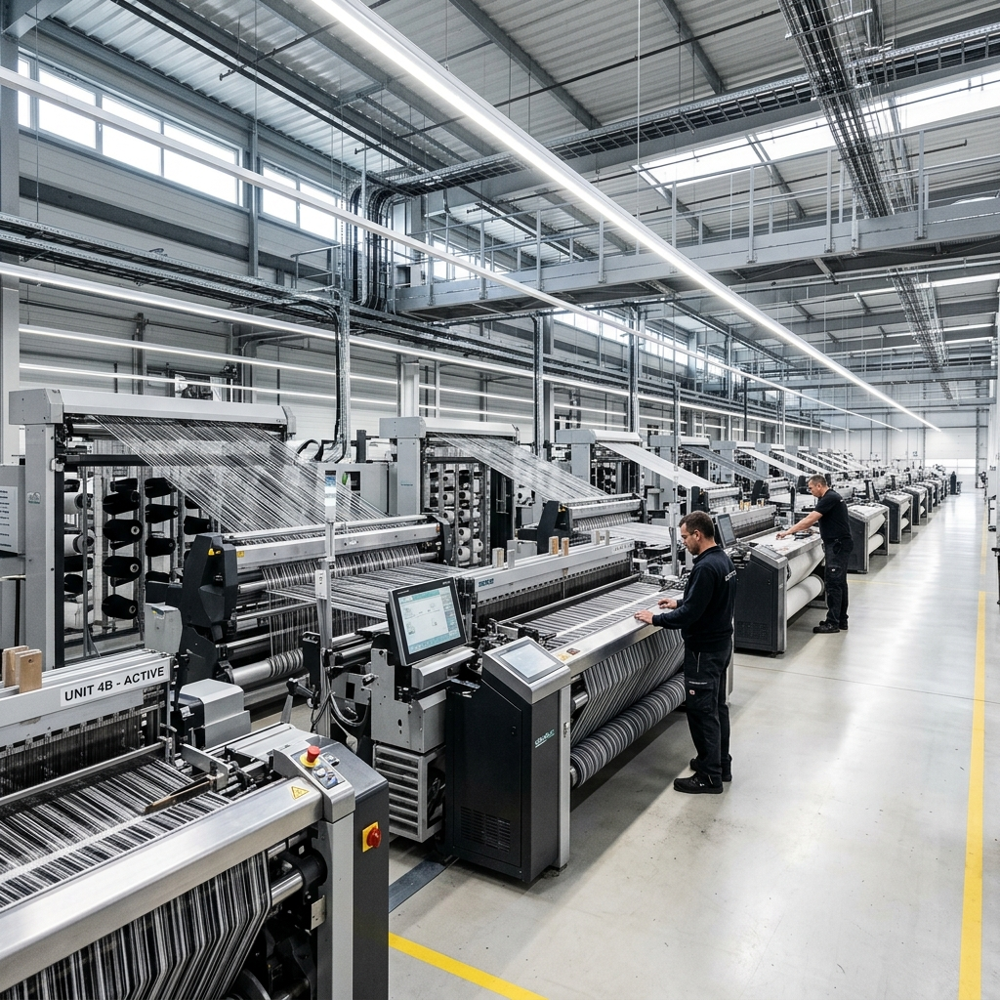

Domingos Silva & Cunha — est. 2001
Tradição têxtil,
engenharia
e visão global
a partir de Portugal.
46 colaboradores · Roriz, Santo Tirso · Cluster têxtil do Ave — o epicentro da fabricação de têxteis-lar de exportação europeia. Saber-fazer autêntico aliado a tecnologia contemporânea de tecelagem Jacquard.
Engenharia têxtil
com alma portuguesa.
“Do Vale do Ave para o mercado global: unimos a nobreza sensorial do felpo português ao rigor dimensional europeu.”
Nascemos no ecossistema têxtil de excelência de Portugal com um propósito claro: entregar artigos de têxteis-lar que combinam rigor estrutural, durabilidade comprovada e um toque distinto. Não encaramos o produto têxtil como uma comodidade, mas como o resultado de uma criteriosa engenharia de fios, torções e acabamentos.
Com um modelo operacional ágil, combinamos o desenvolvimento contínuo da nossa marca própria com uma relação estreita com parceiros e retalhistas internacionais. Oferecemos a solidez de uma manufatura de raiz europeia com capacidade para responder aos padrões mais exigentes de private label e canal contract.
Polo Têxtil Europeu
Localização no coração da indústria têxtil de Santo Tirso, integrando cadeia vertical de fiação, tinturaria e acabamentos.
Área Coberta Industrial
Parque com teares Jacquard eletrónicos, urdissagem própria, secção de corte automatizado e acabamento de alta precisão.
Capacidade de Transformação
Flexibilidade técnica para assegurar grandes volumes contínuos ou séries exclusivas para private label com rastreabilidade total.
Presença Internacional
Fornecimento consolidado para resorts hoteleiros 5★, spas e prestigiadas cadeias de retalho na Europa e América do Norte.
Segmentos e Mercados de Atuação
Luxury Hospitality & Resorts
Fornecimento contínuo de toalhas de banho densas e tapetes de piso reforçados para hotéis de luxo em França, Suíça e Itália.
European Department Stores
Desenvolvimento de coleções sazonais de marca própria em turco penteado e veludo jacquard para redes na Alemanha, Áustria e Benelux.
Nordic Living Brands
Produção exclusiva em 100% algodão biológico certificado e linho europeu com estruturas waffle 3D para marcas da Escandinávia.
Thermal & Thalasso Spas
Toalhas e roupões de máxima absorção com fibras sem torção, resistentes ao vapor, cloro e ciclos de desinfeção industrial.
Heritage Country Estates
Coleções personalizadas com bordaduras jacquard exclusivas e monogramas bordados de alta definição para o Douro, Toscana e Provença.
Bespoke Yachting Interiors
Felpos de alta densidade em algodão nobre com acabamento antibacteriano e resistência à salinidade marítima para frotas navais e jatos privados.

Capacidade fabril moderna instalada no berço têxtil português.
A nossa unidade fabril integra todas as fases críticas do desenvolvimento têxtil: desde a receção e ensaio de fios de fiações selecionadas, passando por urdissagem e tecelagem em teares de pinças e ar, até ao acabamento dimensional e confeção de alta tolerância.
A Evolução Industrial da DSC
Da fundação no Vale do Ave à consolidação como parceiro de engenharia têxtil internacional.
Raízes no Vale do Ave
Arranque com teares mecânicos dedicados à tecelagem de turco tradicional português de elevada densidade e resistência.
Entrada no Mercado Europeu
Primeiros fornecimentos de grande escala para hotelaria e retalho em França, Alemanha e Reino Unido.
Teares Jacquard Digitais
Implementação de teares eletrónicos de alta velocidade e criação do laboratório interno de controlo de qualidade e cor.
Transição Circular & Energia Limpa
100% energia solar fotovoltaica, certificações globais GOTS/OEKO-TEX e integração de fios reciclados de economia circular.
Saber-Fazer Fabril
Domínio profundo das técnicas de tecelagem felpuda, controlo de tensão de urdidura e confeção de alta tolerância.
Rigor Técnico Europeu
Garantia de conformidade dimensional, estabilidade de cor e resistência a ciclos exigentes de lavagem industrial.
Flexibilidade Operacional
Capacidade para desenvolver desde pequenas séries exclusivas até lotes industriais de grande escala com consistência.